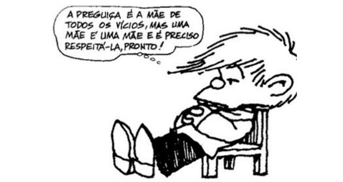
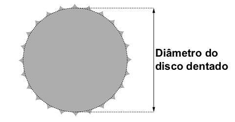
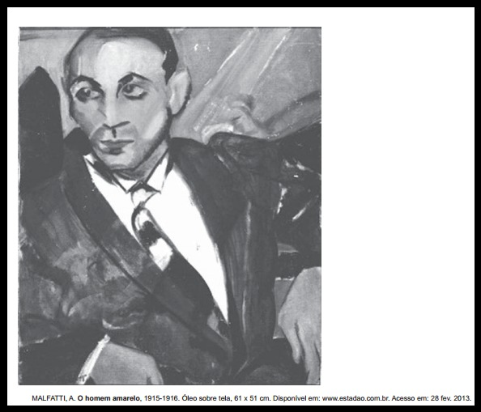
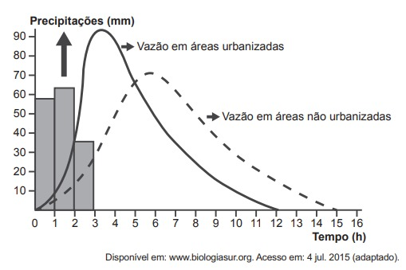
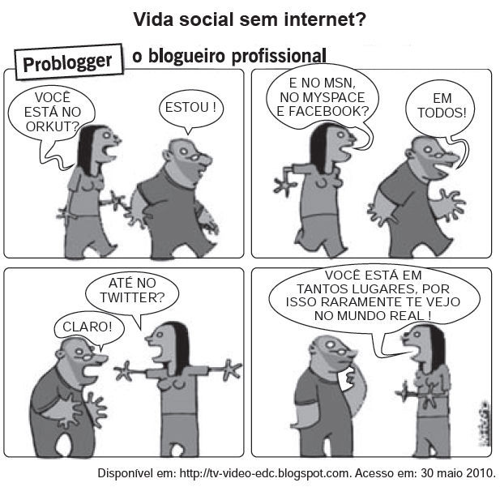

Nessa charge, o recurso morfossintático que colabora para o efeito de humor está indicado pelo(a)
Matemática e Suas Tecnologias
(Enem/2019) Um ciclista quer montar um sistema de marchas usando dois discos dentados na parte traseira de sua bicicleta, chamados catracas. A coroa é o disco dentado que é movimentado pelos pedais da bicicleta, sendo que a corrente transmite esse movimento às catracas, que ficam posicionadas na roda traseira da bicicleta. As diferentes marchas ficam definidas pelos diferentes diâmetros das catracas, que são medidos conforme indicação da figura.

O ciclista já dispõe de uma catraca com 7 cm de diâmetro e pretende incluir uma segunda catraca, de modo que, à medida em que a corrente passe por ela, a bicicleta avance 50% a mais do que avançaria se a corrente passasse pela primeira catraca, a cada volta completa dos pedais.
O valor mais próximo da medida do diâmetro da segunda catraca, em centímetro e com uma casa decimal, é
Ciências Humanas e suas Tecnologias
(Enem/2016)
TEXTO I
Embora eles, artistas modernos, se deem como novos precursores duma arte a ir, nada é mais velho que a arte anormal. De há muitos já que a estudam os psiquiatras em seus tratados, documentando-se nos inúmeros desenhos que ornam as paredes internas dos manicômios. Essas considerações são provocadas pela exposição da Sra. Malfatti. Sejam sinceros: futurismo, cubismo,impressionismo e tutti quanti não passam de outros tantos ramos da arte caricatural.
LOBATO. M. Paranoia ou mistificação: a propósito da exposição de Anita Malfatli. O Estado de São Paulo. 20 dez. 1917 (adaptado).
TEXTO II
Anita Malfatti, possuidora de uma alta consciência do que faz, a vibrante artista não temeu levantar com os seus cinquenta trabalhos as mais irritadas opiniões e as mais contrariantes hostilidades. As suas telas chocam o preconceito fotográfico que geralmente se leva no espírito para as nossas exposições de pintura. Na arte, a realidade na ilusão é o que todos procuram. E os naturalistas mais perfeitos são os que melhor conseguem iludir.
ANDRADE, O. A exposição Anita Malfatti. Jornal do Cormmercio. 11 jan. 1918 (adaptado).

A análise dos documentos apresentados demonstra que o cenário artístico brasileiro no primeiro quartel do século XX era caracterizado pelo
Ciências Humanas e suas Tecnologias

A dinâmica hidrológica expressa no gráfico demonstra que o processo de urbanização promove a
Ciências Humanas e suas Tecnologias

A charge revela uma crítica aos meios de comunicação, em especial à internet, porque